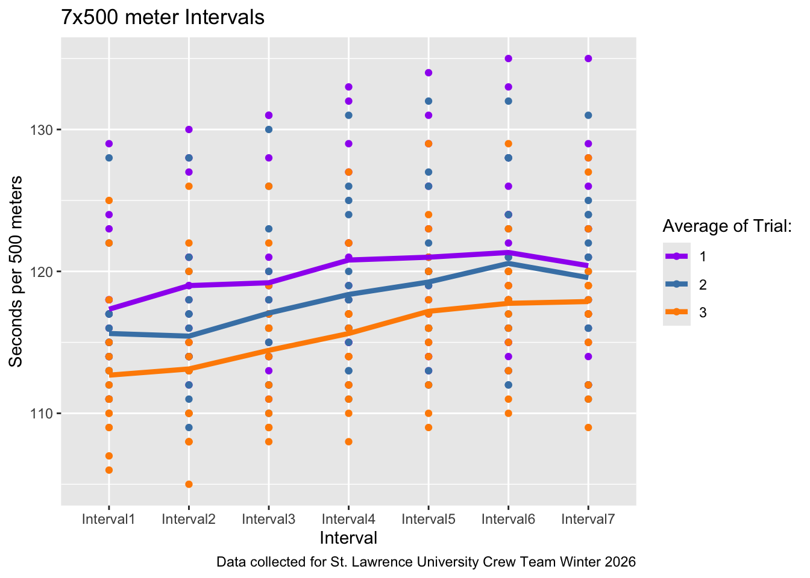
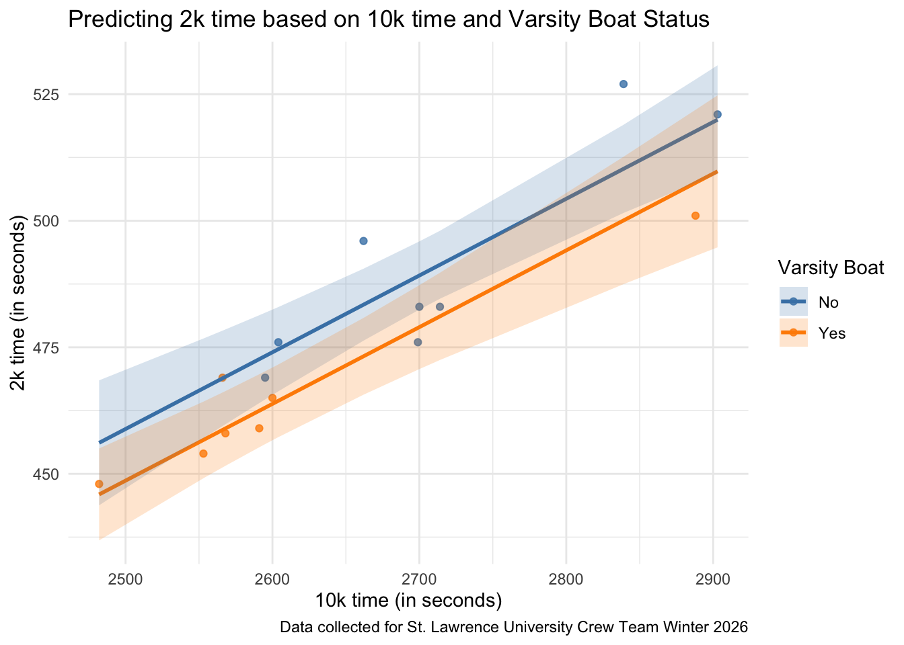

## initial cleaning and wrangling done in excel
library(readr)
library(ggplot2)
library(tidyverse)
library(openintro)
library(ggeffects)
library(broom)
x500sData <- read_csv("500sData.csv")
x1000sData <- read_csv("1000sData.csv")Final Project Wrangling
x500_long <- x500sData |> pivot_longer(cols = Interval1:Interval7,
names_to = "Interval", values_to = "Time") |>
mutate("Time" = as.numeric(Time)) |>
mutate("Time" = Time/60)
x500_line <- x500_long |> group_by(Trial, Interval) |>
summarise(Mean = (mean(Time)))
x1000_long <- x1000sData |> pivot_longer(cols = Interval1:Interval5,
names_to = "Interval", values_to = "Time")Variable Descriptions for x500sData and x100sData
| Variable | Description |
|---|---|
ID |
ID indicating athlete |
Average |
Average time per 500m for each interval. |
IntervalX |
Average time for 500m for that interval. |
Rate |
Average strokes per minute during the piece. |
Trial |
Number indicating which number trial the piece is (first of the season, second, third). |
ggplot(data = x500_long, aes(x = Interval, y = Time)) +
geom_point(aes(group = Trial, colour = factor(Trial))) +
geom_line(data = x500_line, aes(x = Interval, y = Mean,
group = Trial, colour = factor(Trial)),
linewidth = 1.5) +
scale_colour_manual(values = c("purple", "steelblue", "darkorange"), name = "Average of Trial:") +
labs(y = "Seconds per 500 meters", colour = "AverageTrial", title = "7x500 meter Intervals",
caption = "Data collected for St. Lawrence University Crew Team Winter 2026")
The team completed a 7x500m interval piece three times throughout their winter training period. Trial indicates which session the piece was completed during. 7x500m means that athletes erg 500 meters as fast as they can and then rest for approximately 2 minutes before erging another 500 meters. This is repeated for 7 intervals. The points show each individual data point for each interval, coloured by which trial it was completed during. The three lines indicate the average of the team for each interval during each trial. They show that, in general, the team got faster each trial. One interesting note is that, despite there being a general trend of athletes slowing down throughout the piece, the 7th interval is a little faster than the 6th in each trial. This is most likely explained by athletes “putting it all out there” knowing that it is their last interval and using that to go faster.
pred_10k_2k <- read_csv("pred_10k_2k.csv") |>
mutate(first10k = as.numeric(first10k)) |>
mutate(second10k = as.numeric(second10k)) |>
mutate(k2 = as.numeric(k2)) |>
mutate(k2 = k2/60) |>
mutate(first10k = first10k/60) |>
mutate(second10k = second10k/60) |>
mutate(v1 = recode(v1, `0` = "No", `1` = "Yes"))
mod_2k <- lm(k2 ~ second10k + v1, data = pred_10k_2k)
mod_2k |> tidy()
glance(mod_2k)
ggpredict(mod_2k, terms = c("second10k", "v1"))
ggpredict(mod_2k, terms = c("second10k", "v1")) |>
as.data.frame(terms_to_colnames = TRUE) |>
as_tibble()
pred_time <- ggpredict(mod_2k, terms = c("second10k", "v1")) |>
as.data.frame(terms_to_colnames = TRUE) |>
mutate(v1 = recode(v1, `0` = "No", `1` = "Yes")) |>
as_tibble()
pred_time <- pred_time |>
arrange(v1, second10k) |>
mutate(v1 = factor(v1, levels = c("No", "Yes")))ggplot(data = pred_10k_2k, aes(x = second10k, y = k2)) +
geom_point(aes(colour = factor(v1)), alpha = 0.8) +
geom_line(data = pred_time, aes(x = second10k, y = predicted,
group = interaction(v1),
colour = factor(v1)), linewidth = 1) +
geom_ribbon(data = pred_time, aes(x = second10k, y = predicted,
ymin = conf.low, ymax = conf.high, group = interaction(v1),
fill = factor(v1)), alpha = 0.2) +
labs(colour = "Varsity Boat", fill = "Varsity Boat", y = "2k time (in seconds)",
caption = "Data collected for St. Lawrence University Crew Team Winter 2026",
x = "10k time (in seconds)", title = "Predicting 2k time based on 10k time and Varsity Boat Status") +
scale_colour_manual(values = c("steelblue", "darkorange")) +
scale_fill_manual(values = c("steelblue", "darkorange")) +
theme_minimal()
The coefficient of 0.152 for 10k time indicates that predicted 2k time increases, on average, by 0.15 seconds for each additional second increase in 10k time, as long as varsity boat status is held constant. This makes sense as athletes that are faster in a 10k will have generally faster 2k times, but not by the same rate as the duration of the piece impacts the ability of an athlete to pace appropriately.
There may be cause for concern related to collinearity if you assume that varsity athletes will also have faster 10k times. This means that there is a chance that the v1 variable would be confounded and it is important to check the correlation between the variables. After an analysis of the variables, it is shown that **
second10k (β = 0.152, p < .001) For every additional second in the second 10k split, predicted 2k time increases by about 0.15 seconds, holding varsity status constant. This is highly significant and the strongest predictor in the model. It makes intuitive sense — athletes who fade in the back half of a 10k tend to have slower 2k times, likely reflecting aerobic capacity or pacing discipline. v1Yes (β = −10.2, p = .065) Varsity athletes are predicted to be about 10 seconds faster on the 2k than non-varsity athletes, holding second10k split constant. This is marginally significant — it doesn’t clear the conventional α = .05 threshold, but a 10-second difference is a large and practically meaningful effect in rowing. The borderline p-value likely reflects low sample size rather than a negligible true effect. Worth keeping in the model.
A few things worth noting:
The intercept’s large standard error (55.6) and the relatively large SE on v1Yes (5.02) compared to the estimate suggest the model may be working with a fairly small sample — do you know your n? second10k having such a tight SE (0.0204) relative to its estimate suggests it’s a very stable, reliable predictor. If you haven’t already, it may be worth checking whether the v1/v1No effect is confounded — varsity athletes likely also have faster second 10k splits, so there could be collinearity worth examining (via VIF or correlation between predictors).